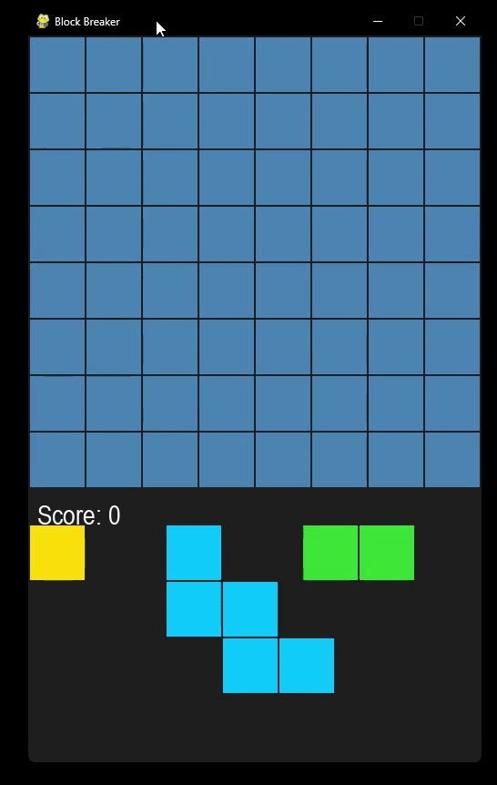
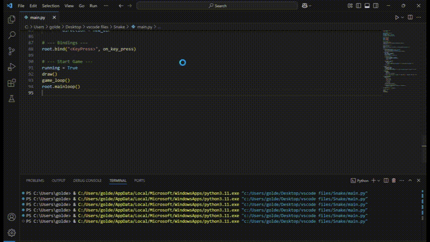
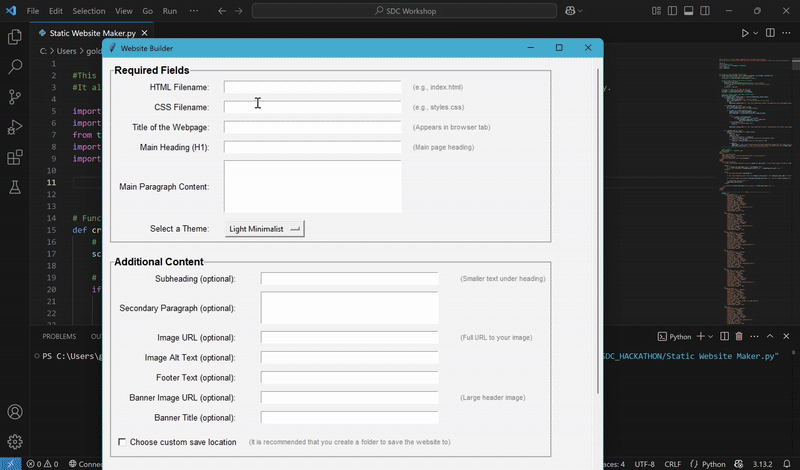
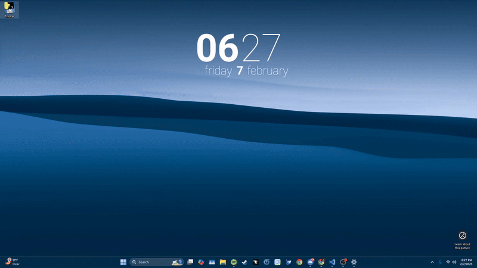

All Projects
Hunger Games Simulator
A fully interactive, browser-based Hunger Games simulation engine featuring dynamic event generation, inventory systems, and day-by-day storytelling.
- Built a complete front-end simulation viewer with custom UI for events, fallen tributes, and survivor tracking
- Developed a Python backend that procedurally generates arena events using configurable probabilities and item systems
- Implemented lethal, non-lethal, loot, inventory, and special-item events with multi-victim and placeholder-driven templates
- Designed a JSON-based simulation format enabling repeatable runs and external configuration through
arena_events.json - Created a polished simulation flow including Bloodbath logic, death pacing, mandatory eliminations, and victory generation
AstroCombat
A fast-paced two-player space shooter built with Pygame, developed in collaboration with Ethan Works.
- Built core gameplay loop featuring real-time ship movement, projectile firing, and hit detection
- Implemented player-vs-player combat mechanics including health tracking and responsive controls
- Designed dynamic background movement and visual effects to enhance game feel
- Structured game architecture for readability and modularity, enabling future expansion
 View on GitHub
View on GitHub
Block Breaker
I built this drag-and-drop puzzle game using Pygame. Players place random block shapes onto a grid and score points by clearing full rows or columns. This project gave me hands-on experience with managing game state and designing interactive gameplay mechanics.
- Developed dynamic block spawning using a library of over 30 unique shapes
- Implemented mouse-based interaction to move, place, and validate blocks on a grid
- Built collision and fit-checking logic for accurate placement and scoring
- Designed a scoring system that rewards clearing full rows or columns
This project enhanced my ability to structure interactive systems, manage game state efficiently, and apply core programming principles like modularity and reusability within a graphical framework.
 View on GitHubSnake Game
A classic Snake game built with Python and Tkinter, expanding on my foundational skills from my first project by adding real-time input handling, dynamic rendering, and collision logic.
- Implemented real-time game loop using Tkinter’s `after()` method
- Designed a grid-based canvas for snake movement and apple generation
- Handled directional controls via keyboard events with input validation
- Created visual feedback for game state and scoring display
This project helped me deepen my understanding of animation timing, event-driven programming, and basic game mechanics while solidifying my comfort with Python GUI development.
 View on GitHubStatic Website Generator
A Tkinter-based GUI tool for generating fully customizable, responsive static websites without writing a single line of HTML or CSS.
- Intuitive GUI interface—build pages visually with input fields and buttons.
- Customizable content: titles, headings, paragraphs, embedded images & YouTube videos, footers, and optional banners.
- Responsive design: outputs mobile-friendly HTML5 and CSS3 layouts.
- Nine built-in themes including Light Minimalist, Dark Mode, Cyberpunk Neon, Vintage, and more.
- Live preview: instantly render your site in the browser as you work.
- Export options: save separate HTML and CSS files to any directory.
Developed during Liberty University’s Software Development Club hackathon (2nd place), this tool streamlines website creation with multimedia support and theme switching—all powered by Python and Tkinter.
View on GitHub
Eclipse RPG Toolkit
Designed and developed a text-based RPG using object-oriented programming (OOP), focusing on game mechanics, file handling, and scalable code structure.
- Modular OOP design for Weapons, Armor, Items, and Enemies
- Turn-based combat system with inventory management
- Procedural enemy generation based on difficulty
- Dynamic file handling for loading game assets
This project enhanced my problem-solving and software design skills...
View on GitHubTracker
A fast-paced reflex game where you must click rapidly spawning “X” buttons before they overcrowd the screen.
- New “X” buttons appear every 0.25 seconds at random positions with spatial constraints.
- Click and remove 100 X’s to win the game.
- Game over if 10 or more X’s accumulate on screen at once.
- Dynamic challenge ramps up as targets steadily multiply.
Built with Python and Tkinter, Tracker is a fun game that tests your speed and hand-eye coordination.
 View Code on GitHubThis Website
This portfolio website was designed and developed from scratch using HTML, CSS, and JavaScript. It showcases my technical skills, projects, and experience in a responsive and visually appealing layout.
- Built with semantic HTML and modern CSS for clean structure and maintainability
- Uses JavaScript for interactive components like expandable project descriptions
- Styled to match a professional dark theme with animation support
- Optimized for desktop and mobile devices
Developing this site helped solidify my frontend development abilities and provided a real-world context for applying responsive design, accessibility, and component-based thinking.
View on GitHubDiscord Bot
A Python Discord bot delivering random GIFs, witty moderation, and spontaneous voice-channel antics through async event handling.
- Mastered asynchronous I/O with discord.py and aiohttp for seamless command handling and API requests.
- Integrated Tenor GIF API to fetch and post trending media using randomized search terms.
- Implemented moderation: forbidden-word detection, message deletion, dynamic nicknaming, and embedded logs.
- Leveraged discord.ext.tasks for scheduled voice-channel joins and background task loops.
- Employed randomness for GIF posts, and reactions.
- Configured Discord intents, structured commands, and robust error handling for production readiness.
Developing this bot was a fun request from a friend. I enjoyed making it and it continues to entertain the members of the servers it is in.
Tic-Tac-Toe Game
My first ever programming project—a simple two-player Tic-Tac-Toe game built in Python using Tkinter, this project is what sparked my intrest in making new things and eventually led me to move from a cybersecurity focus to a software engineering and data science focus.
- Created a functional 3x3 game board using Tkinter widgets
- Implemented turn-based mechanics with win and draw conditions
- Used message boxes to communicate game outcomes
- Learned core programming concepts like functions, conditionals, and loops
This project marked my entry into software development and helped me gain confidence in Python, problem-solving, and building user interfaces.
View on GitHub